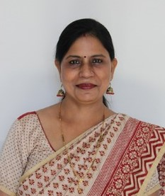

Department of Anatomy · AIIMS Bhopal
Dr Kusum R. Gandhi
Additional Professor of Anatomy
Anatomist, teacher and researcher. She runs the anthropometry lab at AIIMS Bhopal, where the human body is studied by measuring it: its size, shape and proportion, and what these tell us about health.

- ORCID0000-0001-6349-8035
- Google Scholarh-index 9 · 266 citations
- Scopus Author IDto be added
- teaching anatomy, since 2008
- 18years
- research articles in indexed journals
- 29papers
- citations on Google Scholar
- 266cited
- national conferences, with oral presentations
- 20+meetings
Current work
The anthropometry lab
Kinanthropometry measures the human body, its size, shape, proportion and composition, and relates those measurements to health and function.
At AIIMS Bhopal, Dr Gandhi conducts courses of the International Society for the Advancement of Kinanthropometry (ISAK) and has trained anthropologists from across India in standardised measurement.
- DST-SERB fundedDominant somatotype, physical fitness and happiness in adults with non-communicable diseases
- ICMR-STSHand anthropometry and thumb and wrist pain from smartphone overuse
- Baseline studyNasofaciometric analysis and stature in the Central Indian population
- MD thesis projectNutritional status and anthropometric parameters in the elderly
Plot a somatotype
A somatotype rates physique on three scales. Move the sliders to place a physique on the somatochart, the way the Heath-Carter method does.
An illustration of the method, not an assessment. X = ectomorphy − endomorphy; Y = 2 × mesomorphy − (endomorphy + ectomorphy).
Focus
Areas of interest
Anthropometry
Kinanthropometry, somatotyping and body measurement as a window on health.
Human morphology
Cadaveric studies of anatomical variation and their surgical and clinical meaning.
Neuroanatomy
From the lumbar sympathetic trunk to the perisylvian region of the brain.
Genetics
Molecular genetics and genetic counselling.
Histology
Micro-anatomy of muscle, heart valves, placenta and skin.
Teaching
Anatomy taught with horizontal and vertical integration, and with moral values, to turn students into competent doctors.
Since 2008
Career
Positions
- Jul 2023 – presentAdditional ProfessorAll India Institute of Medical Sciences, Bhopal
- Jul 2020 – Jul 2023Associate ProfessorAll India Institute of Medical Sciences, Bhopal
- Jul 2017 – Jul 2020Assistant ProfessorAll India Institute of Medical Sciences, Bhopal
- Jul 2016 – Jul 2017Associate ProfessorRKDF Medical College, Bhopal
- Jun 2011 – Jun 2016Assistant ProfessorRural Medical College, PIMS, Loni, Maharashtra
- Apr 2008 – May 2011Junior ResidentRural Medical College, PIMS, Loni, Maharashtra
Education
- M.D. AnatomyThesis on the morphology of the lumbar sympathetic trunkRural Medical College, Pravara Institute of Medical Sciences, Loni · 2008–2011
- M.B.B.S.Gajra Raja Medical College, Jiwaji University · 1990–1997